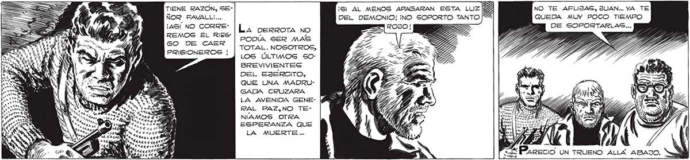

282 DO ERA INÚTIL YA. PENSE TRATAR DE CONTENER AQUEL ALUD QUE SE NOS VENIA ... N INGUNO DE LOS TRES DIJO NADA. ¿PARA QUE? TOTIENE RAZON, SENOR FAVALL!... ¡ASÍ NO CORREREMOS EL RIES" GO DE CAER PRISIONEROS ! e a 3 PA a 4 E tes aet j 4 dd e » 5, e LN IO A EL FINAL. LA perrora No PODIA SER MAS TOTAL. NOSOTROS, LOS ÚLTIMOS S50OBREVIVIENTES DEL EJÉRCITO, QUE UNA MADRUGADA CRUZARA LA AVENIDA GENE- (é RAL PAZ,NO TENIAMOS OTRA ESPERANZA QUE LA MUERTE... ÚLTIMOS TIROS PARA Sl PODEMOS BA" LEARLOS CUANDO ESTÉN AQUÍ LOG OBLIGAREMOS A MATARNOS... S E Vil ,? / 0 h ) j y x )) ( 0 AAA: 0 A e NO TE AFLIJASG, JUAN... YA TE QUEDA MUY POCO TIEMPO
